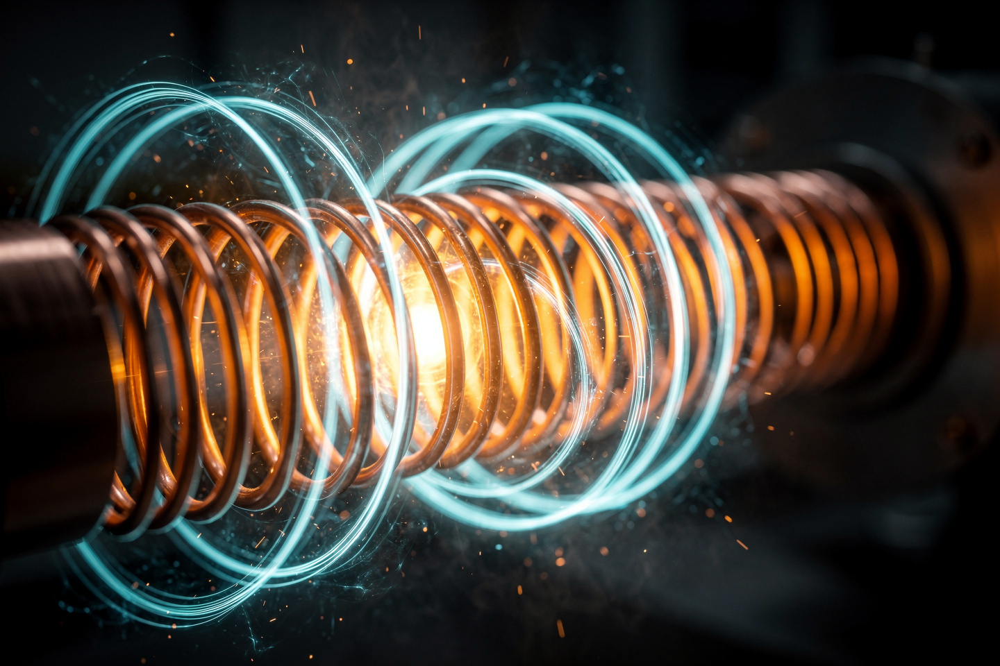
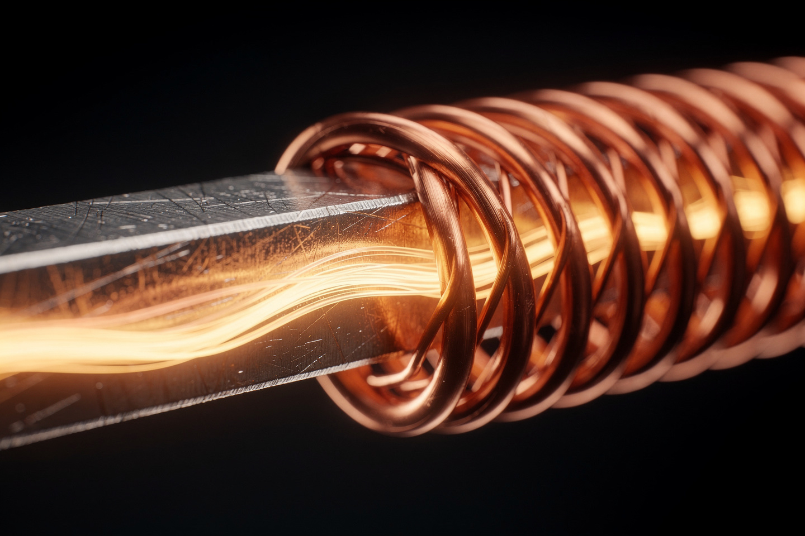

Рабочая заметка · электромагнетизм · часть XIV
Ампер и Фарадей: ток рождает поле, поле рождает ток
Два закона-зеркала: один говорит, что электричество умеет создавать магнетизм, второй — что магнетизм умеет создавать электричество. Вместе они и есть весь принцип работы генератора на электростанции.
В 1820 году Ганс Эрстед случайно заметил, что провод с током отклоняет стрелку компаса — и за одну неделю Андре-Мари Ампер построил из этого количественный закон. Одиннадцать лет спустя Майкл Фарадей нашёл обратную связь: движущийся магнит наводит ток в проводе. Эти два закона — не совпадение, а зеркальное отражение друг друга, и вместе они образуют принцип работы электродвигателей, генераторов и трансформаторов. В этой заметке — оба закона с числами и разбор того, почему мотор и генератор — по сути одно и то же устройство.


Два закона, одна пара
| Закон | Формула | Направление эффекта |
|---|---|---|
| Ампера (1820) | ∮B·dl = μ₀I | ток → магнитное поле |
| Фарадея (1831) | ε = −dΦ/dt | меняющееся поле → ток |
Оба закона уже встречались как ДВЕ ИЗ ЧЕТЫРЁХ строчек уравнений Максвелла (часть IV) — здесь мы разбираем их подробнее, с практическими приложениями: электромагнитами, генераторами и трансформаторами.
Закон Ампера: ток создаёт поле
Формулировка. Циркуляция магнитного поля вдоль замкнутого контура пропорциональна току, охваченному этим контуром:
Один из самых практичных выводов закона Ампера — сила взаимодействия между двумя параллельными проводниками с током (именно эта формула долгое время служила ОПРЕДЕЛЕНИЕМ единицы силы тока — ампера):
Численный пример: два параллельных провода с током I₁ = I₂ = 5 А на расстоянии d = 0.1 м. Найдите силу притяжения на единицу длины.
Провода с током в одном направлении ПРИТЯГИВАЮТСЯ (как параллельные молекулярные токи в постоянном магните), в противоположных — отталкиваются.
Закон Фарадея: поле создаёт ток
Формулировка. Наведённая ЭДС равна скорости изменения магнитного потока через контур, взятой с обратным знаком:
Численный пример: катушка из N = 200 витков находится в поле, магнитный поток через один виток растёт от 0 до 0.02 Вб за Δt = 0.1 с. Найдите наведённую ЭДС.
Именно так работает педальное динамо на велосипеде и генератор на электростанции — механическое движение (вращение) меняет магнитный поток через катушку, и закон Фарадея превращает это изменение в напряжение.
Правило Ленца: природа сопротивляется
Знак «минус» в законе Фарадея — не формальность, а отдельное содержательное правило (Эмилий Ленц, 1833): наведённый ток течёт в таком направлении, что его СОБСТВЕННОЕ магнитное поле противодействует изменению, которое его вызвало.
Если бы знак был противоположным (наведённый ток УСИЛИВАЛ бы исходное изменение потока), система раскручивала бы сама себя до бесконечности — готовый вечный двигатель. Закон сохранения энергии (часть II) прямо запрещает такой сценарий, поэтому правило Ленца — не отдельный произвольный факт, а необходимое следствие того, что энергию нельзя получить из ничего.
Практическое следствие: чтобы двигать магнит через катушку и наводить в ней ток, нужно совершать РАБОТУ против сопротивления, которое сама катушка оказывает движению магнита (наведённое поле «тормозит» магнит) — именно эта работа и превращается в электрическую энергию. Бесплатного электричества закон Фарадея не даёт.
Сквозной пример: мотор наоборот — генератор
Электродвигатель и электрогенератор — механически одно и то же устройство (катушка в магнитном поле), различие только в том, что «на входе», а что «на выходе»:
| Вход | Выход | Работающий закон | |
|---|---|---|---|
| Двигатель | электрический ток | вращение (механическая работа) | сила Ампера на ток в поле |
| Генератор | вращение (механическая работа) | электрический ток | закон Фарадея |
Возьмите одну и ту же катушку в поле магнита: подайте на неё ток — по закону Ампера возникнет сила, катушка провернётся (двигатель). Или, наоборот, прокрутите катушку рукой — по закону Фарадея в ней наведётся ЭДС (генератор). Электромобили используют это буквально: при разгоне мотор работает как двигатель (потребляет ток от батареи), а при торможении — как генератор (рекуперация энергии, ток течёт обратно в батарею, подзаряжая её за счёт кинетической энергии автомобиля).
Куда это ведёт: трансформатор без движущихся частей
Трансформатор — устройство без единой движущейся детали, но полностью основанное на законе Фарадея. Переменный ток в первичной катушке (закон Ампера — ток создаёт меняющееся поле) создаёт меняющийся магнитный поток в общем железном сердечнике; этот меняющийся поток пронизывает вторичную катушку и наводит в ней ЭДС (закон Фарадея). Соотношение витков определяет соотношение напряжений — так работает повышение/понижение напряжения на каждой подстанции по пути от электростанции до розетки.
Если ток в первичной катушке ПОСТОЯННЫЙ (не меняется во времени), магнитный поток тоже постоянен — dΦ/dt = 0, и по закону Фарадея никакая ЭДС во вторичной катушке не наводится вообще. Именно поэтому вся энергосистема построена на переменном токе — только он позволяет непрерывно менять напряжение трансформаторами без потерь на преобразование.
На сайте это отдельные законы, если хочется пройти глубже:
Эксперимент дома
Положите обычный компас на стол, протяните над ним прямой провод, подключённый к батарейке (ПАРАЛЛЕЛЬНО стрелке компаса, буквально повторяя опыт 1820 года), и на секунду замкните цепь.
Что заметить стрелка компаса заметно отклонится от направления на север, пока идёт ток, и вернётся обратно, как только цепь разомкнута — ровно то, что случайно заметил Эрстед на лекции, готовя демонстрацию для студентов, и что за неделю превратил в точный закон Ампер.
Если дома есть фонарик с ручным заводом (динамо-механизм, без батареек — вращаете рычаг, светит лампочка/светодиод), покрутите его сначала БЕЗ нагрузки (лампочка/светодиод выключены или сняты), а затем ПОДКЛЮЧИТЕ нагрузку и покрутите снова.
Что заметить крутить рычаг заметно ТЯЖЕЛЕЕ, когда лампочка подключена и горит — прямая демонстрация правила Ленца (§4): наведённый ток создаёт собственное поле, тормозящее вращение, и именно преодоление этого торможения — механическая работа, которую вы совершаете рукой, — превращается в электрическую энергию, светящую лампочку.
Задачи для проверки
Сначала подумайте сами, затем откройте решение. Решение везде идёт по схеме: Дано → Закон → Решение → Ответ.
1. Два параллельных провода с токами по 10 А каждый находятся на расстоянии 0.2 м. Найдите силу взаимодействия на единицу длины.
Дано I₁ = I₂ = 10 А, d = 0.2 м.
Закон сила между параллельными проводниками (§2): F/L = 2×10⁻⁷·I₁I₂/d.
Решение F/L = 2×10⁻⁷·100/0.2 = 2×10⁻⁷·500 = 10⁻⁴ Н/м.
Ответ 10⁻⁴ Н/м (0.0001 Н на метр длины).
2. Катушка из 150 витков находится в поле, магнитный поток через виток падает с 0.04 Вб до 0.01 Вб за 0.3 с. Найдите модуль наведённой ЭДС.
Дано N = 150, ΔΦ = 0.03 Вб, Δt = 0.3 с.
Закон закон Фарадея (§3): ε = NΔΦ/Δt.
Решение ε = 150·0.03/0.3 = 15 В.
Ответ 15 В.
3. Почему при резком выдёргивании магнита из катушки стрелка гальванометра дёргается сильнее, чем при медленном вытягивании (тот же магнит, то же расстояние)?
Закон закон Фарадея (§3): ε = NΔΦ/Δt — важна СКОРОСТЬ изменения потока, не только его итоговая величина.
Решение при резком движении то же самое изменение потока ΔΦ происходит за намного меньшее время Δt, значит ΔΦ/Δt (и, соответственно, ε) больше.
Ответ резкое движение даёт бо́льшую скорость изменения потока, а не бо́льшее изменение потока как таковое.
4. Трансформатор понижает напряжение с 220 В до 11 В. Если первичная обмотка имеет 2000 витков, сколько витков у вторичной?
Дано U₁ = 220 В, U₂ = 11 В, N₁ = 2000.
Закон отношение витков трансформатора (§6): U₁/U₂ = N₁/N₂.
Решение N₂ = N₁·U₂/U₁ = 2000·11/220 = 100.
Ответ 100 витков — понижение в 20 раз соответствует отношению витков 20:1.
5. Почему при торможении электромобиля (рекуперация) аккумулятор заряжается, хотя мотор в этот момент не потребляет ток от батареи?
Закон §5 — реверсивность мотора/генератора.
Решение при торможении колёса продолжают вращать обмотку электромотора по инерции — в этом режиме устройство работает как ГЕНЕРАТОР (закон Фарадея: вращение катушки в поле магнита наводит в ней ЭДС), а не как двигатель. Наведённый ток течёт в обратном направлении — от мотора к батарее, заряжая её за счёт кинетической энергии автомобиля вместо того, чтобы просто рассеивать её в тепло через тормозные колодки.
Ответ мотор переключается в режим генератора — та же катушка, тот же магнит, обратное направление энергии.
Опечатка, неверная формула, число не сходится, коряво объяснено — напишите нам: feedback@bridge42worlds.org. Каждое сообщение реально читается, разбирается и по нему вносится правка — это не «в стол».